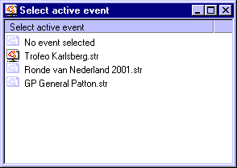

When you are using the StageRace Messaging protocol, you have to make sure that the correct event file is opened in StageRace so that the correct data is being get or set.
The active document can be chosen through the Select active event window, which can be opened through in the menu.

Select active event window
In the Select active event window all opened .str files are listed. You can select the document of your choice and then choose in the menu, so that it gets marked.
This choice is also copied in the status bar.
The first event file that you open automatically becomes the active event. When you close the event file that is set to active, the active event selection will automatically be set to No event selected.